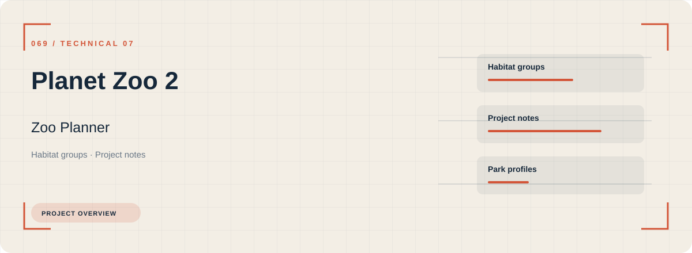

Habitat groups, project notes, and park profiles form the core of Planet Zoo 2 Zoo Planner. Related configuration is grouped by task rather than collected in an undifferentiated list.
Download Planet Zoo 2 Zoo Planner
Open the project's download page for the application package and its installation information.